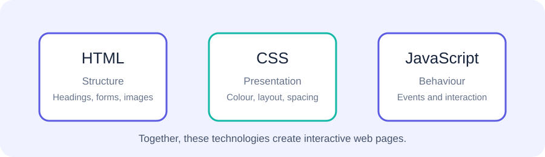

What to learn: This mini activity combines HTML structure, CSS presentation and JavaScript behaviour.
1. Lists, tables and images
HTML lists organise related items using ordered (<ol>) or unordered (<ul>) lists. Tables represent tabular data using <table>, <tr>, <th> and <td>. Images are embedded with <img>, with descriptive alt text for accessibility.
<li>HTML</li>
<li>CSS</li>
</ul>
<img src="photo.jpg" alt="A sample image">
2. Forms
Forms collect user input. Common controls include text fields, email fields, radio buttons, checkboxes, select menus and submit buttons. Labels should be associated with their controls, and input should be validated on both client and server sides.
3. Frames and modern alternatives
Older HTML used frames to display multiple documents in one window. The frameset/frame elements are obsolete in HTML5. Modern layouts use CSS; embedded external content may use a carefully sandboxed <iframe>.
4. CSS and document structure
CSS (Cascading Style Sheets) controls presentation: colours, fonts, spacing, borders, positioning and responsive layouts. CSS can be inline, internal in a <style> element, or external in a .css file. External stylesheets are usually easiest to maintain.
5. Dynamic HTML and JavaScript
Dynamic HTML (DHTML) describes the combination of HTML, CSS and JavaScript to create pages that respond to user actions without requiring a full page reload. JavaScript can select elements, change text or styles, validate forms and respond to events.
6. XML and XML schemas
XML (Extensible Markup Language) stores structured, self-describing data using custom tags. XML is case-sensitive and must be well-formed. An XML Schema (XSD) defines permitted elements, attributes, data types and structure.
7. Object models and presenting XML
The Document Object Model (DOM) represents a document as a tree of nodes. Programs can navigate and update that tree. XML can be displayed using stylesheets or transformed into other formats, such as HTML, for presentation.
8. XML processors: DOM and SAX
A DOM parser loads an XML document into a tree in memory, making navigation and editing convenient but potentially memory-intensive. SAX is an event-based parser that reads sequentially and reports events such as start-element and end-element, making it suitable for large files.
Key terms to remember
- Protocol: A set of rules that systems follow to communicate.
- API: A defined interface through which software systems communicate.
- Mashup: An application that combines data or features from multiple sources.
Quick revision quiz
Which HTML element is used to create a table?